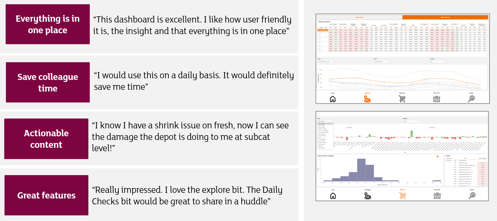
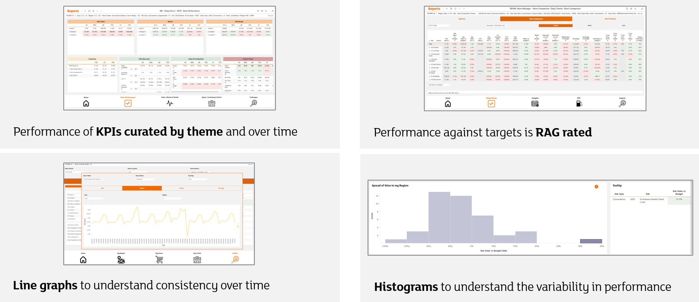

Building a Successful Reporting Suite
I lead a 14‑analyst Data Visualisation & Automation team across Retail and Digital, setting a clear vision for Role‑Based Dashboards that deliver personalised, noise‑free insights tailored to each user’s responsibilities. This approach removed the need for colleagues to navigate multiple reports and instead gave them a single, purpose‑built dashboard that answered the specific questions their role required. My team owned the full end‑to‑end reporting suite for 1,500 stores, maintaining strong engagement with around 3,500 weekly active users and ensuring the reporting products were stable, accurate and genuinely helpful. Working closely with Product Managers, we shaped user stories, clarified requirements and gathered real‑world feedback by visiting stores and engaging directly with frontline colleagues. Through rigorous UAT cycles and ongoing collaboration with a dedicated user group, we successfully delivered a full suite of new role‑based dashboards that provided 98% of all Retail users — more than 14,000 colleagues — with personalised, high‑quality insights designed around their day‑to‑day decisions. This work not only improved clarity and efficiency for thousands of users but also strengthened consistency, governance and user trust across the entire reporting ecosystem.
Increased the On Time In Full Score
I significantly improved the organisation’s end‑to‑end issue‑management processes, resulting in much faster identification, routing and resolution of data and reporting incidents. This ensured problems were surfaced earlier, directed to the right teams more quickly, and resolved with greater consistency, strengthening trust in the reporting ecosystem. I also increased the On Time In Full (OTIF) score — a measure of whether a dashboard loads on time and without errors — for the most‑viewed store‑facing dashboard by 4%, raising performance to 99%. This improvement was delivered on the Labour report, one of the company’s highest‑traffic strategic products, used by an average of 3,500 colleagues every week to understand labour performance and make day‑to‑day operational decisions. By improving both reliability and incident‑management flow, I helped ensure that critical store‑facing insight was stable, timely and consistently available, leading to better user experience and increased confidence in the data.


Reduction in Legacy Reporting
Successfully reduced legacy reporting by 92%, consolidating 39 reports into 3 through a structured review with stakeholders to understand report usage, business value, and consolidation opportunities. This involved mapping user groups, identifying duplications, validating where reports could be merged, and ensuring all changes were fully reflected in updated documentation and the product catalogue. These improvements resulted in a streamlined, accurate, and strategically aligned reporting suite.